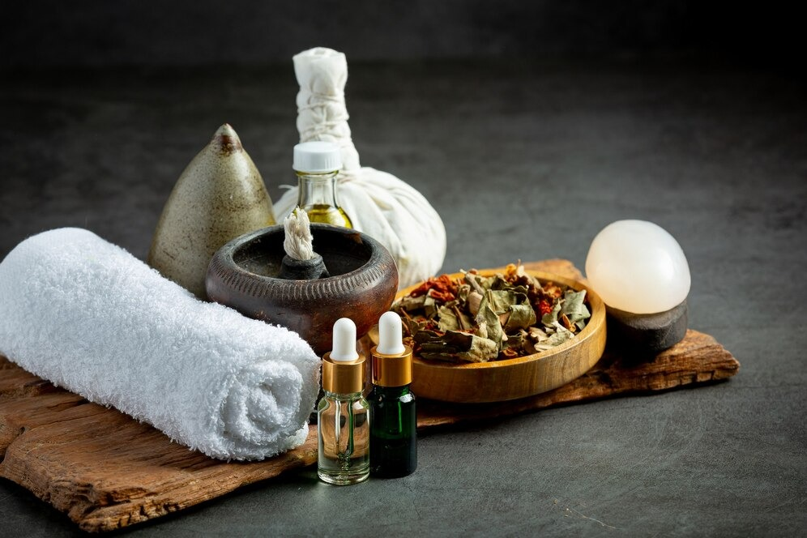
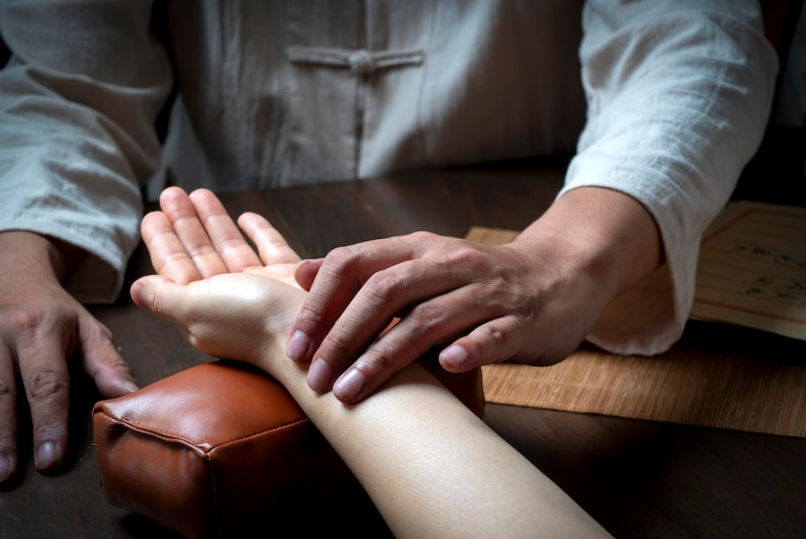

Explore ancient healing techniques from across Asia designed to enhance your well-being and balance.
Traditional Thai Massage
Traditional Thai Massage, or Nuad Thai, is an ancient healing system from Thailand that blends pressure point therapy with deep stretching. Often described as "Thai yoga massage," the practitioner guides you through yoga-like stretches while applying rhythmic pressure.
This technique combines elements of acupressure, Indian Ayurvedic principles, and assisted yoga postures, reflecting influences from neighboring India and China.Historically, Thai massage is said to have been founded by Jivaka, the physician to the Buddha over 2,500 years ago, and it has been passed down through generations as part of Thai traditional medicine. Today, it is even recognized by UNESCO as a part of the intangible cultural heritage of humanity.In a typical session, you remain fully clothed in loose attire, and the massage is performed on a mat on the floor without oils. The therapist uses hands, thumbs, elbows, knees, and feet to compress, pull, stretch, and rock your body. By pressing along energy lines known as Sen lines comparable to the meridians in Chinese medicine the practitioner stimulates the flow of vital energy. The result is an invigorating practice that not only relieves muscle tension but also improves flexibility and promotes overall balance.Clients often report feeling both relaxed and energized after a Thai massage. However, due to the deep stretches and occasional strong pressure, it is important to communicate any injuries or conditions to ensure the session is adapted to your needs.
Chinese Tui Na Massage
Chinese Tui Na (pronounced "twee nah") is one of the pillars of Traditional Chinese Medicine (TCM) and is often described as therapeutic "medical massage." Its name, meaning "push and grasp," reflects the manual techniques used. Originating over 2,000 years ago, Tui Na has been used in Chinese hospitals and clinics to treat a variety of conditions.
Grounded in the principles of acupuncture, Tui Na aims to balance the flow of qi (vital energy) through the body's meridians using techniques such as brushing, kneading, pressing, rolling, and stretching. Unlike the continuous smooth strokes of a Swedish massage, Tui Na's approaches are more varied and might include targeted acupressure and even joint rotations that resemble physical therapy.A session often begins with an assessment of your symptoms, followed by a focused treatment on affected areas, be it back pain, neck stiffness, or joint issues. Although some techniques might feel intense initially, especially when applied to deeply knotted areas, the overall experience is designed to improve circulation, promote healing, and harmonize the body's internal energy.Tui Na is ideal for clients seeking a results-oriented treatment for specific ailments, but it may be less suited to those desiring a purely gentle, relaxing experience. As with any deep treatment, informing your therapist of any health conditions or injuries ensures that the techniques are properly adjusted.
Japanese Shiatsu
Japanese Shiatsu, which literally means "finger pressure," evolved in Japan in the early 20th century and has gained worldwide recognition for its gentle yet effective approach. Rooted in older Japanese massage practices like Anma and sharing similarities with Chinese acupressure, Shiatsu applies steady pressure using the thumbs, fingers, palms, and sometimes even elbows.
The technique focuses on stimulating specific acupressure points and energy channels, also known as meridians. This rhythmic sequence of pressure is designed to clear blockages and balance the body's energy, helping to alleviate stress, reduce muscle tension, and improve overall vitality.In a typical session, you will either lie on a low futon mat or a massage table while remaining fully clothed. The environment is kept calm and soothing, enhancing the meditative effect of the treatment. Rather than using oils, the consistent, targeted pressure is enough to trigger your body's natural relaxation response.Japanese Shiatsu is particularly beneficial for those dealing with stress, back and neck pain, or chronic headaches. Since it is non-invasive and needle-free, it offers a comfortable introduction to acupressure techniques and is well-suited to
Ayurvedic Abhyanga
Ayurvedic Abhyanga Massage is a cornerstone of India's ancient healing system known as Ayurveda. The term Abhyanga means "massage" in Sanskrit, but it denotes a practice that involves the liberal application of warm, herbal oils over the entire body, aiming to nourish the body, mind, and spirit.
Rooted in traditions that are over 3,000 years old, Abhyanga is often recommended as part of a daily self-care regimen. The therapist chooses an oil blend suited to your unique constitution (or dosha) with sesame oil being a popular choice for its grounding properties and applies it while performing long, flowing strokes. This process not only lubricates joints and enhances circulation but also supports detoxification by encouraging lymphatic flow.The massage is usually performed by one or two therapists who work synchronously to ensure every part of the body receives attention. Unlike intense deep tissue techniques, Abhyanga's pressure is light to moderate, making it a deeply soothing and meditative experience. After the massage, many Ayurvedic practices recommend a brief steam or warm towel treatment to help the oils penetrate further and flush out toxins.Clients love Abhyanga for its ability to calm the nervous system, improve sleep, reduce anxiety, and promote overall skin health. As the oil nourishes the skin and muscles, you emerge feeling both relaxed and rejuvenated, a true testament to the holistic nature of Ayurvedic wisdom.

Korean Hand Therapy
Korean Hand Therapy (KHT), sometimes known as Korean Hand Acupressure or Koryo Hand Therapy, is a more modern therapeutic approach based on the concept that the hand is a microcosm of the entire body. Developed in the 1970s by Dr. Tae-Woo Yoo, KHT maps specific points on the hand that correspond to various organs and regions of the body.
During a session, the therapist examines your hands to identify areas of sensitivity and then uses acupressure techniques, often with the thumbs and fingers to stimulate targeted points. In some cases, tiny tools or magnets might be applied to prolong the therapeutic effect.A typical Korean Hand Therapy session lasts about 30 to 60 minutes and is often performed while you sit comfortably in a chair. The concentrated treatment on the hands can alleviate ailments such as headaches, sinus congestion, digestive issues, and even joint pain. Many clients discover that releasing tension in the hands triggers a broader sense of relaxation and well-being throughout the body.This modality is especially appealing if you prefer a non-invasive, focused treatment without the full-body exposure typical of other massages. It is an excellent complement to more extensive bodywork, offering a quick yet powerful burst of relief and balance.

Balinese Massage
Indonesian, or more specifically Balinese, Massage is renowned for its blend of techniques influenced by Ayurveda, Chinese acupressure, and native Indonesian practices. Originating on the beautiful island of Bali, this treatment is often associated with the luxurious spa experiences found at tropical resorts, complete with aromatic oils and soothing music.
Balinese massage is typically performed on a table with the client draped in comfortable attire. Warm coconut oil, often infused with local herbs and fragrances like lemongrass, ylang-ylang, or sandalwood, is applied generously over the entire body. The therapist uses long, gliding strokes combined with kneading, acupressure, and gentle stretching techniques to relieve tension and improve circulation.The treatment's rhythm alternates between deep tissue work on areas of tension and lighter, soothing strokes that calm the body. Many clients report that this multi-dimensional approach not only alleviates muscle pain but also induces a deep sense of relaxation and mental clarity.Balinese Massage is ideal if you seek a full-body spa experience that is both therapeutic and indulgent. It caters to those needing stress relief, muscle relaxation, and a touch of exotic wellness, a perfect balance of physical and sensory rejuvenation.
Tibetan Ku Nye Massage
Tibetan Ku Nye Massage is a traditional healing therapy rooted in the ancient practices of Traditional Tibetan Medicine. The term "Ku Nye" translates to "oil massage," and the treatment involves generously applying warmed herbal oils and gentle manual techniques to balance the body's energy.
Drawing influences from Indian Ayurveda, Chinese medicine, and indigenous Tibetan practices, Ku Nye focuses on harmonizing the three humors, wind, bile, and phlegm, that, when imbalanced, lead to various physical and mental ailments. This healing modality is traditionally used to alleviate stress, improve circulation, and restore overall balance.A typical session begins with the application of therapeutic oils infused with Tibetan herbs, followed by massage strokes that include rubbing, kneading, and light acupressure. The session often extends to specific techniques such as gentle stretching and the use of mild heat from hot stones or compresses. Some treatments even conclude with a unique flour rub to remove excess oil and exfoliate the skin.Clients often remark on the deep sense of calm and revitalization experienced during and after a Ku Nye session. It is particularly beneficial for alleviating chronic stress, tension headaches, and joint stiffness, while simultaneously nourishing the skin and soothing the mind.
Embrace the Ancient Healing Wisdom
From the energizing stretches of Thai Massage to the soothing herbal oils of Abhyanga, the world of Asian massage is beautifully diverse. Each tradition—Thai, Chinese, Japanese, Indian, Korean, Indonesian, and Tibetan—offers unique techniques that promote holistic wellness.
Understanding these practices helps you choose the best treatment—whether you're relieving pain, balancing energy, or simply relaxing. You may even combine methods, like a focused Korean Hand Therapy session followed by a full-body Balinese massage.
As you explore these timeless healing arts, allow yourself the gift of wellness. Let these ancient touch therapies guide you to a more peaceful, energized, and balanced life.